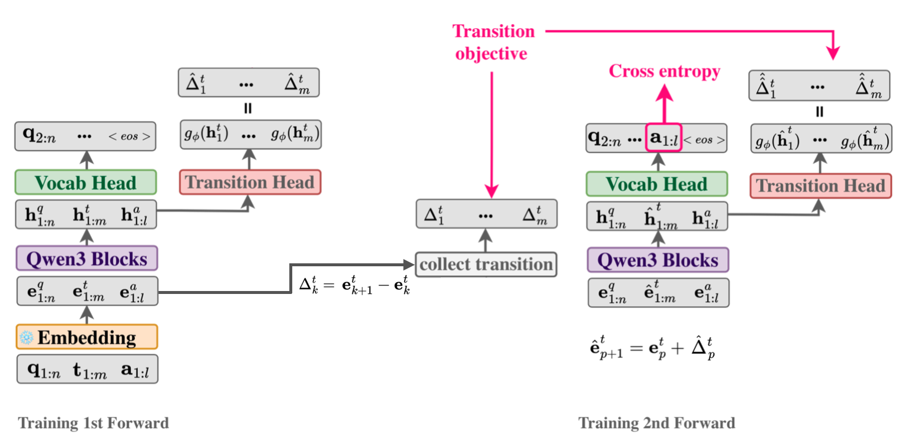
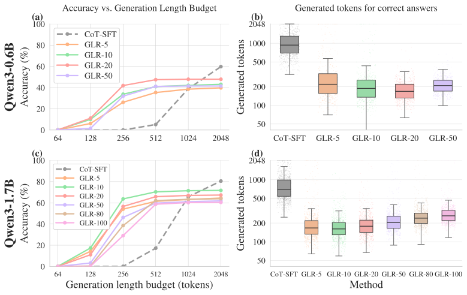
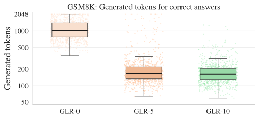

Geometric Latent Reasoning Induces Shorter Generations in LLMs
We treat chain-of-thought as a path through the model's own token-embedding space and train a tiny linear transition head to predict the next step's direction. At inference, the model takes K continuous latent steps before resuming normal decoding, and it then needs ~80% fewer generation steps to reach a correct answer. We never add a length penalty; the shorter generations emerge on their own.
Abstract
Reasoning in the space the model already knows
Large language models solve complex problems by generating lengthy chains of explicit reasoning tokens. While effective, this makes reasoning expensive, length-sensitive, and constrained to (discrete) natural language. While latent reasoning offers a continuous alternative, determining useful structures for intermediate latent states is an open challenge.
In this paper, we formulate latent reasoning as a geometric path-approximation problem within the model's pretrained token-embedding space. We introduce Geometric Latent Reasoning (GLR), which uses a lightweight transition head to predict iterative direction updates in embedding space. Using textual chain-of-thought traces as anchors, GLR learns to approximate discrete reasoning trajectories while permitting continuous deviations from exact token embeddings.
Evaluations on mathematical reasoning benchmarks using Qwen3 models reveal an emergent phenomenon: geometric latent reasoning induces substantially shorter generations without an explicit length objective. By replacing early explicit reasoning with continuous latent steps, models often reach correct answers using substantially fewer total generation steps. These findings suggest that continuous trajectories act as compact intermediate reasoning states, exposing a new tradeoff between latent computation budget, output length, and accuracy.
Method
Chain-of-thought is already a path. We learn to walk it continuously.
Every token the model writes is fed back as its input embedding, so a textual reasoning trace traces out a trajectory in embedding space. GLR learns the local displacement along that trajectory. At inference it follows these learned directions for a few steps without committing to any vocabulary token.
CoT as an embedding-space trajectory
A reasoning trace <think> t1:m </think> a1:ℓ induces a sequence of input embeddings, and we treat this sequence as the path the model reasons along.
The Transformer is continuous in its input, so small moves around a token embedding give nearby hidden states. Soft-token methods show that off-vocabulary inputs can still support coherent reasoning.
A lightweight transition head
A single linear layer $g_\phi:\mathbb{R}^d\!\to\!\mathbb{R}^d$ reads the last hidden state and predicts the displacement to the next reasoning embedding, not the embedding itself.
The discount $\gamma \le 1$ (0.999) relaxes the penalty for later positions, so the latent path is allowed to drift further from the literal text as reasoning proceeds.
Two-pass training with latent replacements
Pass 1 runs the original sequence and collects the true and predicted displacements. Pass 2 replaces every thought embedding with its latent version and trains on
Cross-entropy is applied only to answer tokens, never at latent positions. $\mathcal{L}_\Delta$ anchors the path, and leaving out CE there lets latent states sit between vocabulary tokens. Input embeddings stay frozen, so the displacement targets do not move during training.
K latent steps, then ordinary decoding
After <think>, the model rolls out $K$ continuous updates. Each one is fed back as the next input, skipping the ~300M-weight vocabulary head. Normal token decoding then resumes.
$K$ can be changed at inference time without retraining, and it sets how much of the reasoning budget goes to latent computation versus explicit text.

Results
Shorter generations emerge, and accuracy holds up under tight budgets
We fine-tune Qwen3 models on 10K math traces from Open-R1 Mixture-of-Thoughts and compare against CoT-SFT trained on the same data. Generation length counts every step after the prompt, latent steps included, which is a conservative accounting for GLR.

Does the effect hold beyond small models? We train matched CoT-SFT and GLR models at 0.6B, 1.7B, 4B and 8B parameters. GLR's advantage grows with scale: at 8B it reaches 70% on AMC23 with a 2048-step budget, against 22.5% for CoT-SFT, and its correct answers need 69–86% fewer steps.
Accuracy under budget
Median steps for correct answers
Within each size, GLR and CoT-SFT share the same training data and optimization settings. Because full-parameter 8B training has to fit on a single H100, both 8B models are trained on the same 5.4K-example subset (sequences ≤ 4,096 tokens) instead of 10K. Hover a bar for the exact value.
Fewer steps only matter if they translate into real time. We ran both Qwen3-1.7B models in the same HuggingFace stack (Transformers 4.57.1, PyTorch 2.8.0, BF16, FlashAttention-2, KV cache, greedy, batch size 1) on one H100, with counterbalanced order and warm-ups. Timing runs from prefill to the final token and includes every latent step.
Median latency per example
Approx. compute per example
| Benchmark | Method | Median steps | Median latency (s) | P95 latency (s) | Throughput (ex/s) | TFLOPs / ex | Speedup |
|---|---|---|---|---|---|---|---|
| MATH500 | CoT-SFT | 2,300 | 45.715 | 84.308 | 0.0195 | 9.97 | 1.00× |
| MATH500 | GLR-10 | 427 | 8.640 | 65.033 | 0.0774 | 2.58 | 5.29× |
| SVAMP | CoT-SFT | 517 | 10.277 | 40.365 | 0.0640 | 2.99 | 1.00× |
| SVAMP | GLR-10 | 115 | 2.236 | 5.711 | 0.3040 | 0.73 | 4.60× |
Full test sets, with joint latent + text caps of 4,096 (MATH500) and 2,048 (SVAMP) steps. Speedup CIs come from 10,000 paired-bootstrap resamples. FLOPs are counted from instrumented backbone, vocabulary-head and transition-head calls (2 FLOPs per MAC). Sequential throughput improves by 3.97× and 4.75×.
We compare against two continuous-reasoning alternatives trained on the same data, with the same prompts, splits, decoding and step budgets. Soft Thinking stays close to CoT-SFT's accuracy–length profile. Coconut-style hidden-state feedback shortens generations but loses a lot of accuracy. GLR gets both higher budgeted accuracy and fewer steps.
| GSM8K | SVAMP | MATH500 | ||||||
|---|---|---|---|---|---|---|---|---|
| Model | Acc@512 | Acc@1024 | Steps ↓ | Acc@1024 | Steps ↓ | Acc@1024 | Acc@2048 | Steps ↓ |
| CoT-SFT (0.6B) | 5.2 | 38.9 | 934 | 61.7 | 675 | 5.4 | 30.0 | 1,996 |
| Soft Thinking (0.6B) | 5.1 | 38.8 | 902 | 60.0 | 662 | 7.8 | 33.3 | 1,760 |
| Coconut-style (0.6B) | 5.5 | 5.7 | 655 | 14.3 | 370 | 8.3 | 8.3 | 1,107 |
| GLR (0.6B) | 47.5 | 47.8 | 168 | 66.0 | 123 | 36.4 | 36.8 | 328 |
| CoT-SFT (1.7B) | 17.2 | 65.7 | 699 | 74.7 | 471 | 9.6 | 44.2 | 1,876 |
| Soft Thinking (1.7B) | 17.9 | 66.4 | 697 | 79.3 | 456 | 14.6 | 50.0 | 1,442 |
| GLR (1.7B) | 70.4 | 71.4 | 161 | 82.3 | 101 | 53.6 | 54.4 | 334 |
Acc@B is pass@1 (%) with a total budget of B steps. Steps is the median total steps over correct answers. Soft Thinking follows Zhang et al. and uses whichever of fixed soft-token budgets or natural </think> closure gives the stronger budgeted accuracy. Coconut-style is a matched two-pass version that keeps hidden-state feedback, because full recursive Coconut training is infeasible with 8,192-token traces.
Unfrozen-embedding baseline
GLR freezes the input embeddings so its displacement targets stay fixed. For a matched comparison the main CoT-SFT baseline is frozen too. Here we also report standard CoT-SFT with trainable embeddings, and the conclusions do not change.
| GSM8K | MATH500 | SVAMP | AMC23 | OlympiadBench | ||||||||
|---|---|---|---|---|---|---|---|---|---|---|---|---|
| Qwen3-1.7B | @512 | @1024 | Steps | @1024 | @2048 | Steps | @1024 | Steps | @2048 | Steps | @2048 | Steps |
| CoT-SFT (frozen emb.) | 17.2 | 65.7 | 699 | 9.6 | 44.2 | 1,876 | 74.7 | 471 | 20.0 | 2,751 | 13.6 | 3,129 |
| CoT-SFT (unfrozen emb.) | 17.4 | 64.8 | 686 | 6.6 | 41.8 | 1,815 | 74.7 | 462 | 17.5 | 2,895 | 13.6 | 2,599 |
| GLR | 70.4 | 71.4 | 161 | 53.6 | 54.4 | 334 | 82.3 | 101 | 35.0 | 483 | 22.7 | 447 |
Statistical significance
Qwen3-1.7B, GLR-10, greedy. The seed, model, K, test sets and budgets were fixed before analysis. Brackets are 95% paired-bootstrap CIs (10,000 resamples), and p-values come from exact McNemar tests with Holm correction.
| Dataset | Budget | CoT-SFT | GLR-10 | Δ (pp) | pHolm |
|---|---|---|---|---|---|
| GSM8K | 256 | 0.1 | 63.7 | +63.6 [61.0, 66.2] | <0.001 |
| MATH500 | 512 | 0.0 | 44.0 | +44.0 [39.6, 48.4] | <0.001 |
| SVAMP | 256 | 1.3 | 80.7 | +79.3 [74.7, 84.0] | <0.001 |
| All examples | Jointly correct only | |||
|---|---|---|---|---|
| Median steps | CoT → GLR | Reduction | CoT → GLR | Reduction |
| GSM8K | 753 → 172 | 77.2% | 661.5 → 159 | 76.0% |
| MATH500 | 2,264.5 → 420.5 | 81.4% | 1,596 → 322 | 79.8% |
| SVAMP | 493 → 108 | 78.1% | 453.5 → 101 | 77.7% |
The reduction holds on the same problems both methods solve (n = 884 / 261 / 236), so it is not a side effect of GLR solving easier problems.
Temperature sampling, not just greedy
Three samples per problem (T = 0.6, top-p = 0.95) at the paper's constrained budgets. A trajectory counts only if it finishes within budget and is correct. CIs use a problem-level cluster bootstrap.
| Sampled pass@1 | Majority@3 | Pass@3 (oracle) | ||||
|---|---|---|---|---|---|---|
| Dataset | CoT | GLR | CoT | GLR | CoT | GLR |
| GSM8K @256 | 0.0 | 59.9 | 0.0 | 61.3 | 0.1 | 74.5 |
| MATH500 @512 | 0.1 | 45.0 | 0.0 | 44.4 | 0.2 | 57.4 |
| SVAMP @256 | 1.0 | 77.8 | 0.0 | 80.7 | 3.0 | 91.0 |
GLR's sampled pass@1 advantage is +59.9 / +44.9 / +76.8 pp, and every paired 95% interval is far from zero. The constrained-budget advantage is therefore not an artifact of greedy decoding.
Understanding latent dynamics
The learned directions carry the reasoning, not the extra positions
Is the gain just from inserting a few extra positions? Is GLR secretly emitting the answer early? Several controls separate these explanations.
1 · Turn latent rollout off (K = 0)
Take the same GLR-trained model, with the same training recipe and loss masking, and simply decode with exact discrete tokens from the first step. Generations jump back to ~1,000 tokens. A few learned latent steps (K = 5 or 10) bring the median under 200.

Qwen3-1.7B on GSM8K, correct answers only. The reduction appears only when the learned continuous transitions are actually used.
2 · Replace the learned directions new
All controls keep K = 10. Zero / repeated-<think> keep the positions but remove movement. A norm-matched random head and norm-preserving noise keep the movement but scramble its direction.
Accuracy vs. median total steps
Removing movement keeps accuracy but raises median length from 183.5 to 948 steps. Random or noisy directions shorten outputs but lose 19.3 and 13.7 accuracy points. Only the learned directions give the favorable tradeoff.
3 · Where does the latent state land? new
We teacher-force the CoT-SFT trace through the GLR model and align each latent state to the discrete trajectory in hidden-state space. Progress is how far along the CoT the final latent state lands (0 to 1).
| Benchmark | Progress: correct / incorrect | Drift: correct / incorrect | FutureHit@10 |
|---|---|---|---|
| GSM8K | 0.905 / 0.857 | 0.985 / 0.984 | 0.20% |
| MATH500 | 0.810 / 0.709 | 0.989 / 0.987 | 0.00% |
| SVAMP | 0.892 / 0.852 | 0.987 / 0.982 | 0.13% |
Correct generations get further along the reasoning trajectory: +1 SD of progress corresponds to an accuracy odds ratio of 1.31 [1.21, 1.45], while drift is not predictive (OR 1.08 [0.99, 1.19]). FutureHit@10 is only 0–0.2%, so latent states are genuinely continuous rather than copies of upcoming token embeddings.
4 · Not an early-answer shortcut
Learned GLR closes the reasoning span immediately (</think> right after the latent phase) in only 8% of cases. In the other 92% it keeps reasoning explicitly, but from a more advanced state that needs far fewer discrete steps.
5 · How many latent steps?
The effect of $K$ is non-monotonic. Moderate values (5–20) give the best tradeoff. Very long uninterrupted rollouts (K = 80 or 100 at 1.7B) lower accuracy, likely because a locally trained transition model accumulates drift without discrete grounding. Choosing K adaptively per problem is a natural next step.
Qualitative example
From latent steps back to text, mid-solution
These are real Qwen3-1.7B generations on a GSM8K problem. The orange squares are continuous latent steps. They are fed back as inputs and never decoded into text. After 20 of them, the model's first explicit tokens are 54 - 20 = 34., the final operation of the solution, as if the earlier steps had already been worked out in latent space.
So the latent prefix does more than shorten the visible text. It moves the model into a partially advanced reasoning state before standard decoding resumes. With larger K the model closes </think> right away and writes a compact solution.
Notes
Details & limitations
How is efficiency measured, and is it fair to GLR's baseline?
The primary metric counts every post-prompt step: for GLR that is the K latent steps plus all text tokens. This is conservative for GLR, since a latent step still needs a full Transformer forward pass but replaces the ~300M-weight vocabulary projection with a ~4M-parameter transition head. Wall-clock measurements with both methods in the same HuggingFace stack confirm that the savings are real (4.6–5.3× lower median latency).
Why freeze the embedding layer?
The transition head learns displacements between input embeddings. If the embeddings were updated at the same time, the targets would be non-stationary and training would be unstable. CoT-SFT is frozen too for a matched comparison, and an unfrozen CoT-SFT baseline yields the same conclusions (see “vs. latent baselines”).
Does it work outside math, or with much larger models?
We show consistent gains from 0.6B to 8B across six math benchmarks, ranging from arithmetic word problems to olympiad-level problems. Science, code, theorem proving, planning and multi-hop reasoning are untested so far. Training so far uses at most 10K CoT traces, which may understate what GLR can do.
What are the main limitations?
K is fixed before the latent rollout instead of adapting per problem, and very long latent rollouts drift. At large generation budgets, CoT-SFT can reach higher final accuracy. Replacing explicit reasoning with continuous states also makes part of the computation less interpretable, so GLR-style inference should be paired with answer verification and drift monitoring.
What comes next?
We plan learned stopping criteria that choose K per problem, larger training corpora, diffusion- or flow-style latent trajectory models (where test-time scaling becomes sampling multiple continuous paths), and evaluation beyond mathematics.
Citation
BibTeX
If you find this work useful, please cite:
@article{kumar2026geometric, title={Geometric Latent Reasoning Induces Shorter Generations in LLMs}, author={Kumar, Shashi and Kaloga, Yacouba and Motlicek, Petr and Kodrasi, Ina and Cavallaro, Andrea}, journal={arXiv preprint arXiv:2606.02248}, year={2026} }